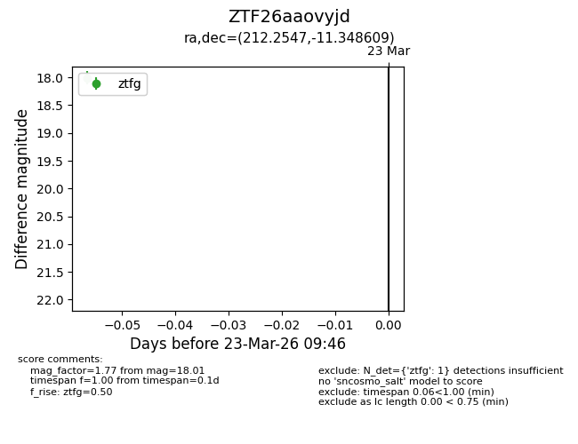
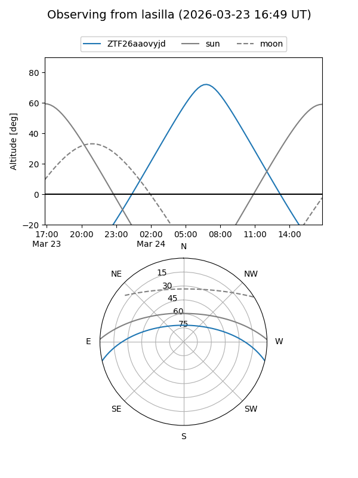
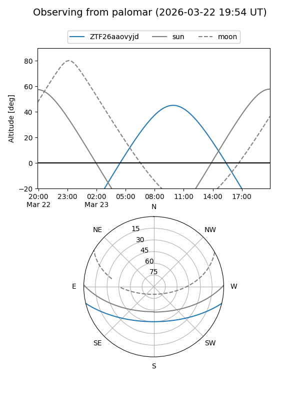

ZTF26aaovyjd
Target ZTF26aaovyjd at 2026-03-23 09:48
Aliases and brokers:
FINK: link
Lasair: link
ALeRCE: link
alt names
ZTF26aaovyjd (ztf,fink_ztf)
Coordinates:
equatorial (ra, dec) = 212.2547,-11.34861
equatorial (HMS+DMS) = 14:09:01.14,-11:20:54.99
galactic (l, b) = (331.5459,+47.16715)
Flags:
Photometry:
last ztfg=18.01
1 ztfg detections
Lightcurve

Visibility


Additional plots